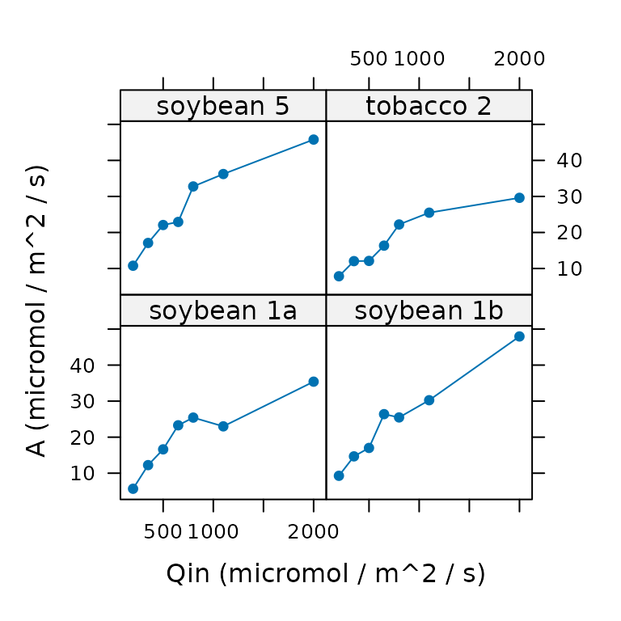
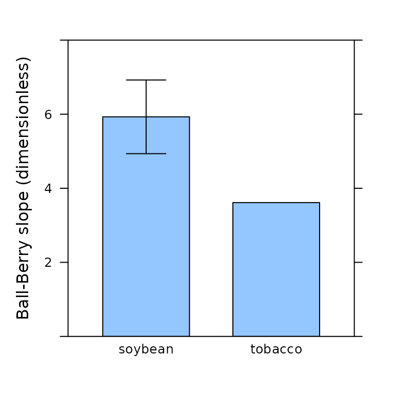

Guide to Licor LI-6800 User Constants
Source:vignettes/LI6800_user_constants.Rmd
LI6800_user_constants.RmdOverview
When performing gas exchange experiments, measurements of variables like , , and are not the only important pieces of data to record–it’s also crucial to include information about the particular plant that is being measured, such as its species or treatment group. Such descriptive data is a type of metadata, which is defined as “data that provides information about other data.”
Through the “User Constant” interface, Licor LI-6800 instruments provide a way to include user-defined descriptive metadata in log files, alongside the measured values that are always recorded. When used effectively, Licor user constants can be a convenient way to keep track of metadata, helping to streamline your data analysis workflow.
Simply put, including user constants in your data will make processing and analyzing the data much easier. There are two main situations where user constants can help:
Applying an operation to every curve in a data set. This approach can be used to automate processing steps such as curve fitting. The image below shows how a curve identifier (a type of metadata that can be stored as a user constant, or determined from the values of other user constants) can be used for this purpose.
Performing statistical operations to compare results across groups. Following the example in the image below, this could entail running a t-test to check for signficiant differences in J between rings.
Short examples of these applications can be found below in the Examples of User Constant Applications section, and additional examples can be found throughout the PhotoGEA documentation, such as the Analyzing C3 A-Ci Curves vignette.

Illustration of processing multiple parts of a table using
by and consolidate. Here, id and
ring are user constants, where the id column
identifies each individual curve, and the ring value
indicates whether each leaf was grown under ambient (A) or elevated (E)
carbon dioxide conditions. The processing function fits a single A-Ci
curve and returns a list of two tables called fits and
parameters.
The first two sections of this vignette provide key advice about how to set up user constants and what they can be used for:
Choosing User Constants – Advice for choosing pieces of metadata to record, including examples.
Using User Constants – Advice for setting up user constants for measurements.
The later sections include more information about a few related topics:
Examples of User Constant Applications – A few short examples of using user constants when processing and analyzing data, building off the brief overview above.
Using File Names or Log Remarks – A discussion of alternatives to user constants; this section illustrates why user constants are generally simpler and easier.
How To Deal With Files That Have No Metadata – A discussion of what to do with log files where user constants, file names, or log remarks were not used to record metadata.
Throughout this vignette, key pieces of advice will be shown in italics. The final section in the vignette (Summary of Advice for Using Licor LI-6800 User Constants) contains a list of all such pieces of advice.
Although this vignette is specialized for Licor LI-6800 instruments, other gas exchange systems have similar ways to record user constants, so most of the advice here is general, even if particular details may change with other instruments. This advice is also specialized for measuring response curves, but we will sometimes mention other considerations that may apply when making spot measurements.
Several R examples in this vignette use the the PhotoGEA
and lattice packages, so we will load them now:
Choosing User Constants
Before setting up your user constants through the Licor LI-6800 interface, it is necessary to decide which pieces of metadata to record. Here are a few considerations to keep in mind when choosing them:
User constants should generally reflect your experimental design and the comparisons you eventually plan to make.
For example, if you have a field experiment with two cultivars and
two treatments, it would make sense to include cultivar and
treatment as user constants.
In combination, user constants should uniquely identify each response curve in your data set.
In the experiment above, if you plan to measure multiple biological
replicates from each cultivar and treatment, then cultivar
and treatment will not uniquely identify each measurement.
In this case it would make sense to also include a
replicate user constant.
Don’t include too many user constants.
Each user constant takes time and effort to define, and to update during your measurements. Make sure each one has a clear purpose, and is not redundant with another user constant.
Examples of User Constants
Here are a few examples of user constants that have been used by researchers:
instrument,species,plot, andreplicate: These were used for field measurements of plants from different species, where there were multiple plots of each species. Including the “nickname” for each instrument as a user constant can make it easy to check for any instrument-specific bias in the measurements.machine,line,sample,condition: These were used for growth chamber measurements of plants from different lineages that were grown under different temperature conditions. Here,sampleis an ID number that plays the same role asreplicatein some of the other examples.cultivar,plot,leaf_type: These were used for field measurements of plants from different cultivars that were arranged in several plots. For each plot, two different leaf types (sunlit and shaded) were measured.instrument,plant_id: This is a very minimal example that is sufficient to uniquely identify each curve in the set. Here, the researcher was using a randomized block design in a greenhouse experiment, where each plant ID consisted of a block number and a genotype, formatted likeblock - genotype. It is possible to extract the block and genotype information from this ID, but it probably would have been easier to use separate user constants forblockandgenotypeinstead of a singleplant_id. See the Using File Names or Log Remarks section for more details about extracting components of a multi-part identifier.
Using User Constants
In practical terms, there are three main steps involved with using Licor LI-6800 user constants:
- Defining the user constants
- Choosing logging options
- Setting values of the user constants
These will be discussed in the following three sections.
Defining the User Constants
The “LI-6800 Operating Instructions” includes a section about defining user constants. This is a great place to start, but it’s missing some important practical details:
User constants must be defined before opening a log file.
The user constants will (potentially) be included as columns in the log file, so so they must be defined before opening a log file. They can be defined during warmup tests, which is a good time to get them sorted out.
User constant definitions are retained by each machine between uses.
Just like environmental settings (such as humiditity, temperature, or light), user constant definitions are retained when a log file is closed and when the machine is powered off. So, when you first start using a machine, you may see user constant definitions from the previous experiment it was used for. Just go ahead and replace these with your own definitions.
Always log user constants as columns, not as rows.
Logging the user constants as rows breaks up the main data table in the log file. A basic expectation for a table is that each row represents a set of observations of each column. This is no longer true when user constants are logged as rows, which makes the table difficult to process.
Never reset after logging.
When the “reset to default after logging” option is selected, the value of the user constant will change to its default after a single log. If you are running a response curve, this means that the first row in the curve will have the desired value of the user constant, and then the remaining rows will have the default value. This is confusing. Potentially, it could be acceptable to “reset to default after logging” when making spot measurements, but even in this case it is not clear what the benefit of resetting would be.
It is rare to need a computed variable.
Computed variables are almost never needed. The only exception is if you want to see the value of a variable that is not included in a typical log file, such as the Ball-Berry index (when measuring Ball-Berry curves).
Be consistent with spelling, capitalization, and spacing across machines and replicates.
If you are using multiple machines for a single experiment and plan
to eventually combine data from each separate log file, it is important
to use consistent spelling and capitalization across the user constant
definitions. For example, if one machine has a user constant called
Species and another has species, R will not
identify these as being the same column when reading log files.
Consider using a dropdown menu.
For user constants with simple values, setting values with the
keyboard/number pad is the best choice. For example, if the
replicate user constant will only take numeric values
1 through 5, then this would be easy to enter
using the keyboard. However, sometimes values are more complicated; for
example, the construct_id user constant might take values
h1na, zg5b, and WT. In this case,
spelling these out would be tedious and error-prone, and it would be
better to use a dropdown menu instead of the keyboard.
Consider using a configuration file to define user constants.
User constant definitions can be saved to a configuration file, which can then be transferred to a USB stick. From there, the configuration file can be copied to other machines, and the definitions can be loaded. This can save time and help ensure that user constants use consistent spelling and capitalization across all machines.
Choosing Logging Options
The “LI-6800 Operating Instructions” includes a section about logging options. One of the logging options pertains to user constants.
It is rare to prompt on manual logs.
When the “prompt on (manual) logs” option is selected, a prompt window will appear after making a manual log; the prompt will allow you to enter values of each user constant. When measuring response curves, manual logs are rarely made, so there is no strong reason to use this option. It may be helpful when making spot measurements, though.
Setting Values of the User Constants
The values of user constants can be set or changed at any time after the constants themselves are defined. To do this, first make sure that the “Edit/Reorder” checkbox is not selected. Then, simply click on a user constant; a window will appear where you can type the new value or select it from a dropdown menu.
If all the user constants are set to log as columns, each row in the log file will contain the current value of each user constant. If none of the user constants are set to “reset to default,” then their values will remain at the values you have specified until you change them.
Make user constants part of your measurement routine.
Before clamping on to a new leaf, it is a good idea to double check the environment variables, and to update user constants so they accurately describe the new leaf. Make sure both of these steps are part of your measurement routine. The machine itself will not automatically remind you to update user constant values.
Record metadata in a second place.
User constants are a convenient way to ensure that your important metadata is stored alongside the gas exchange data itself. However, it’s easy to make mistakes in field conditions, and sometimes you will forget to update user constants when clamping a new leaf or starting a new curve. As an “insurance policy,” it is wise to record the metadata in a second place, typically a paper lab notebook. In the paper record, just indicate the sequence of samples that each machine measures throughout the day. This will enable you to correct any errors in the user constants.
Examples of User Constant Applications
Applying an Operation to Every Curve in a Data Set
We often want to apply an operation to every response curve in a data set. This could be something relatively simple, such as plotting values against values, or something more complicated, such as fitting the Farquhar-von-Caemmerer-Berry model to estimate the values of key photosynthetic parameters. In all such cases, a prerequisite is that we must be able to identify each curve in the set.
User constants help to achieve this. For example, if every curve in
the set can be identified by its unique values of the
species and plot columns, then we can define a
new curve_identifier column by combining the values of
species and plot. Then, we can use this column
to split the set into chunks representing individual curves, and apply
an operation to each chunk.
Here is an example using a Licor log file that is included with the
PhotoGEA package. When this file was created, the researcher specified
the values of user constants called species and
plot. The file contains several Ball-Berry curves, which
are a special type of light response curve intended to be fit using the
Ball-Berry model:
# Read an example Licor file included in the PhotoGEA package
licor_file <- read_gasex_file(
PhotoGEA_example_file_path('ball_berry_1.xlsx')
)
# Create a `curve_identifier` column based on the `species` and `plot` columns
licor_file[, 'curve_identifier'] <- paste(
licor_file[, 'species'],
licor_file[, 'plot']
)
# Plot A vs. Qin for each curve in the data set
xyplot(
licor_file[, 'A'] ~ licor_file[, 'Qin'] | licor_file[, 'curve_identifier'],
type = 'b',
pch = 16,
xlab = 'Qin (micromol / m^2 / s)',
ylab = 'A (micromol / m^2 / s)'
)
# Get the number of measured points in each curve
by(
licor_file,
licor_file[, 'curve_identifier'],
nrow
)
#> $`soybean 1a`
#> [1] 7
#>
#> $`soybean 1b`
#> [1] 7
#>
#> $`soybean 5`
#> [1] 7
#>
#> $`tobacco 2`
#> [1] 7
# A more complex example: apply the `fit_ball_berry` function to each curve
licor_file <- calculate_total_pressure(licor_file)
licor_file <- calculate_gas_properties(licor_file)
licor_file <- calculate_ball_berry_index(licor_file)
bb_results <- consolidate(by(
licor_file,
licor_file[, 'curve_identifier'],
fit_ball_berry
))Performing Statistical Operations
All fitting functions in PhotoGEA will preserve user constants in their outputs, which makes it easy to perform statistical operations on the resulting parameter estimates. Continuing with the example above, we can calculate the mean Ball-Berry intercept for each species or plot the mean Ball-Berry slope:
# Get the Ball-Berry parameter estimates
bb_parameters <- bb_results$parameters
# Calculate mean Ball-Berry intercept for each species
by(
bb_parameters,
bb_parameters[, 'species'],
function(x) {
mean(x[, 'bb_intercept'])
}
)
#> $soybean
#> [1] 0.1141754
#>
#> $tobacco
#> [1] 0.09410874
# Make barchart of mean Ball-Berry slope for each species
barchart_with_errorbars(
bb_parameters[, 'bb_slope'],
bb_parameters[, 'species'],
ylim = c(0, 8),
ylab = 'Ball-Berry slope (dimensionless)'
)
This is a very simple example with a simple data set. More realistic examples could perform stats tests or compute ANOVA tables.
Using File Names or Log Remarks
Besides user constants, there are other methods for digitally storing metadata.
Perhaps the simplest approach is to include only one response curve
in each file, and use the file name to store the metadata. For example,
the file name could be formatted like
YYYY-MM-DD species plot replicate.xlsx.
Another option is to use log
remarks, which are free-form text rows saved in the log file.
Remarks are intended for comments such as “Wow, this plant looks
terrible,” but they can be repurposed to store metadata. Following the
example above, the remark message could be something like
species plot replicate.
A downside to these approaches is that they only provide one field
for storing the metadata. In other words, in the examples above, instead
of creating separate columns for species,
plot, and replicate, these approaches would
create a single description of all three together. If you want to later
extract the individual species, plot, and
replicate values, it will be necessary to “parse” the combined
text string.
User constants save time in the long run compared to storing metadata in file names or remarks.
Because of the “parsing issue,” it’s generally simpler and more time-efficient to just make separate user constants for each important piece of metadata. Although it’s often simple for a human to parse a string, it can be difficult for a computer.
There is no general way to parse a string, but we discuss a few options below.
Automated Parsing Using R
Automated parsing can sometimes be accomplished in R with some
combination of the strsplit, grep, and
gsub functions.
Here is an example using strsplit:
# Set up a hypothetical user remark formatted like "species plot replicate"
remark_message <- 'maize 2 3'
# We can split this message into components that are separated by spaces
split_remark_message <- strsplit(remark_message, split = ' ')
str(split_remark_message)
#> List of 1
#> $ : chr [1:3] "maize" "2" "3"
# Then we can identify each component of the split message
species <- split_remark_message[[1]][1]
plot <- split_remark_message[[1]][2]
replicate <- split_remark_message[[1]][3]
str(list(species = species, plot = plot, replicate = replicate))
#> List of 3
#> $ species : chr "maize"
#> $ plot : chr "2"
#> $ replicate: chr "3"It’s easy to imagine scenarios where this approach to parsing will
fail. For example, suppose a typo was made when making the remark, and
it was written as maize2 3. Let’s see what happens:
# Set up a hypothetical user remark with a typo
remark_message <- 'maize2 3'
# We can split this message into components that are separated by spaces
split_remark_message <- strsplit(remark_message, split = ' ')
# Then we can identify each component of the split message
species <- split_remark_message[[1]][1]
plot <- split_remark_message[[1]][2]
replicate <- split_remark_message[[1]][3]
str(list(species = species, plot = plot, replicate = replicate))
#> List of 3
#> $ species : chr "maize2"
#> $ plot : chr "3"
#> $ replicate: chr NASimilar issues would occur if some of the remark components were separated by dashes instead of spaces. Because of issues like this, automated parsing can sometimes be very difficult and complex. Even just detecting when spaces or dashes are used can require a lot of code, as can be seen in this example.
If there are just a few mistakes with the remarks, they can be manually fixed by editing the log files before reading them. However, there is no limit to the number of formatting issues that could potentially occur. You may think you can perfectly follow a clear format for all of your remarks, but everyone makes mistakes.
Manual Parsing Using R
It is possible to side-step the complexities of automated parsing by using code that manually sets the values of individual metadata variables based on the value of the file name or user remark. For example, continuing the example above, we could do something like the following:
if (remark_message == 'maize2 3') {
species <- 'maize'
plot <- 2
replicate <- 3
}
str(list(species = species, plot = plot, replicate = replicate))
#> List of 3
#> $ species : chr "maize"
#> $ plot : num 2
#> $ replicate: num 3When interpreting many different file names or remarks, this
alternative to parsing can be streamlined a bit by using PhotoGEA’s
set_variable function, but it will always be tedious.
Here’s an example of how this could be done:
# Say we have a data frame of spot measurements that also includes user remarks
# with inconsistent formatting
licor_data <- data.frame(
A = c(1.1, 1.2, 1.3, 1.4, 1.5),
Ci = c(291, 292, 293, 294, 295),
user_remark = c('maize 2 3', 'maize-1 4', 'soybean3 1', 'maiz 5 6', '3 2 soybean')
)
print(licor_data)
#> A Ci user_remark
#> 1 1.1 291 maize 2 3
#> 2 1.2 292 maize-1 4
#> 3 1.3 293 soybean3 1
#> 4 1.4 294 maiz 5 6
#> 5 1.5 295 3 2 soybean
# Now we can manually parse the remarks using `set_variable`
licor_data <- set_variable(
licor_data,
'species',
id_column = 'user_remark',
value_table = list(
`maize 2 3` = 'maize',
`maize-1 4` = 'maize',
`soybean3 1` = 'soybean',
`maiz 5 6` = 'maize',
`3 2 soybean` = 'soybean'
)
)
licor_data <- set_variable(
licor_data,
'plot',
id_column = 'user_remark',
value_table = list(
`maize 2 3` = 2,
`maize-1 4` = 1,
`soybean3 1` = 3,
`maiz 5 6` = 5,
`3 2 soybean` = 3
)
)
licor_data <- set_variable(
licor_data,
'replicate',
id_column = 'user_remark',
value_table = list(
`maize 2 3` = 3,
`maize-1 4` = 4,
`soybean3 1` = 1,
`maiz 5 6` = 6,
`3 2 soybean` = 2
)
)
print(licor_data)
#> A Ci user_remark species plot replicate
#> 1 1.1 291 maize 2 3 maize 2 3
#> 2 1.2 292 maize-1 4 maize 1 4
#> 3 1.3 293 soybean3 1 soybean 3 1
#> 4 1.4 294 maiz 5 6 maize 5 6
#> 5 1.5 295 3 2 soybean soybean 3 2Manual Parsing Using Excel
If you are working with Excel log files, it’s also possible to manually add new columns for the individual metadata variables, and fill them in with the appropriate values. This can be time-consuming and tedious, especially if you have many files to process, but sometimes it might be the best option.
How To Deal With Files That Have No Metadata
Sometimes you may find yourself working with files that do not contain any helpful metadata in the form of user constants or remarks, or even in the file names. Don’t worry – there are ways to deal with this situation, as long as the metadata is available somewhere.
Adding Metadata in R
It may require some creativity, but there is usually a way to add a basic curve identifier to a data set in R.
For example, suppose the files contain response curves that all have 17 points. In these files, observations 1–17 will constitute one curve, observations 18–34 will constitute the next curve, and so on. In this case, the following code could be used to add a curve identifier column based on the file name and a sequential curve number:
# Specify the number of points in each curve
pts_in_curve <- 17
# Create a new identifier column formatted like `file_name - curve_number`
licor_data[, 'curve_identifier'] <- paste(
tools::file_path_sans_ext(basename(licor_data[, 'file_name'])),
ceiling(licor_data[, 'obs'] / pts_in_curve),
sep = ' - '
)Of course, this code may have some problems if some curves have
different numbers of points, or if a manual log was accidentally made
(so that the values of obs don’t line up properly). That’s
why creativity may be required.
Once the basic curve identifier has been added, values of metadata
can be added following the set_variable strategy described
in the Manual Parsing Using R
section.
Adding Metadata in Excel
If you are working with Excel log files, it’s also possible to manually add new columns for the individual metadata variables, and fill them in with the appropriate values. This can be time-consuming and tedious, especially if you have many files to process, but sometimes it might be the best option.
Summary of Advice for Using Licor LI-6800 User Constants
User constants should generally reflect your experimental design and the comparisons you eventually plan to make.
In combination, user constants should uniquely identify each response curve in your data set.
User constants must be defined before opening a log file.
User constant definitions are retained by each machine between uses.
Always log user constants as columns, not as rows.
Never reset after logging.
It is rare to need a computed variable.
Be consistent with spelling, capitalization, and spacing across machines and replicates.
Consider using a dropdown menu.
Consider using a configuration file to define user constants.
It is rare to prompt on manual logs.
Make user constants part of your measurement routine.
Record metadata in a second place.
User constants save time in the long run compared to storing metadata in file names or remarks.